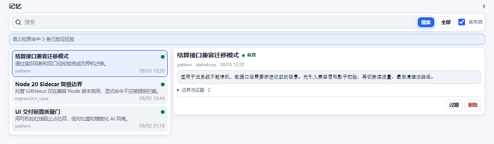
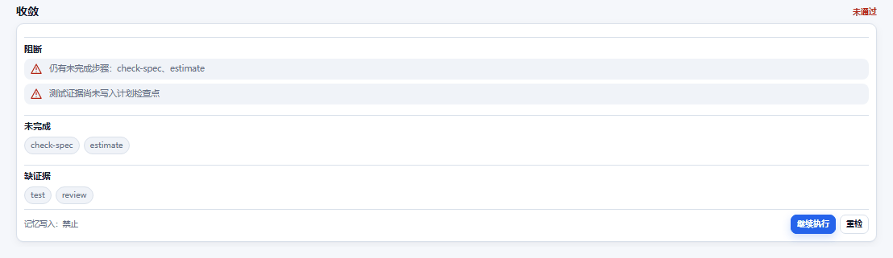

Feature Workbench
展示父子规格、当前步骤、证据和跨会话恢复状态。
真实 UI · 自动演示
下面的演示直接复用 npm 包中的 MCP App 源码。计划推进、记忆检索和收敛闸门都来自真实界面，不是单独绘制的宣传图。
展示父子规格、当前步骤、证据和跨会话恢复状态。

搜索、浏览、检查生命周期与证据，并管理已验证经验。

缺步骤、缺测试或缺审查证据时拒绝收尾，通过后才允许长期记忆写入。
v4 核心能力
plan_heartbeat 持久化步骤与证据，resume_plan 在中断或切换 Agent 后恢复下一可执行步骤。
Memory、Feature、Bug、Product 和 Convergence 直接显示在支持 MCP Apps 的 Host 中。
按版本、平台、架构和 Node 主版本隔离；完整性校验、FTS 探针、失败自动降级。
Host 丢失 MCP tool lease 时，项目内 probe 启动器继续调用同一 Tool Registry，不污染 package.json。
复杂版本需求自动拆成父规格、子规格和依赖图，check_spec 递归验证完整性。
成功模式、失败尝试、伪根因和回归案例只有在 converge 通过后才正式写入长期记忆。
Documentation